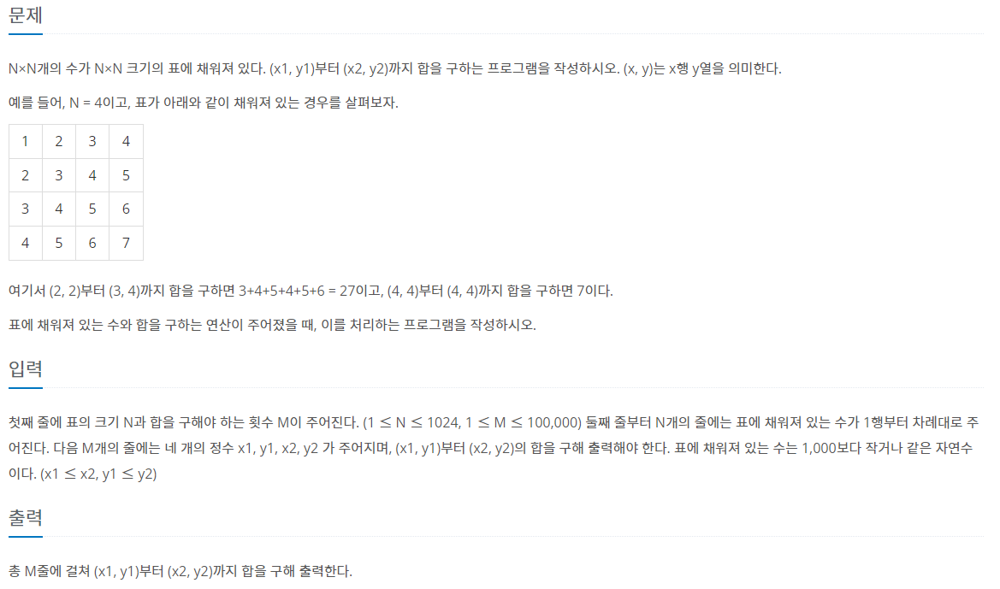
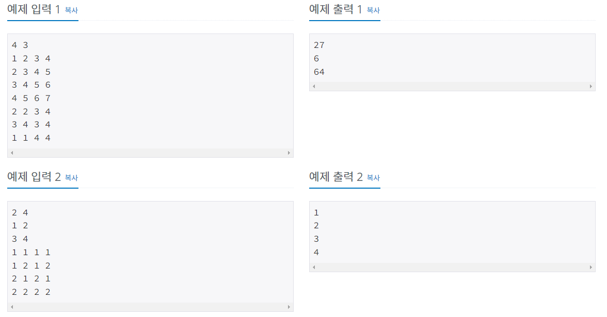
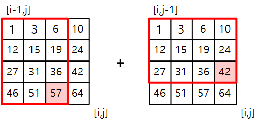
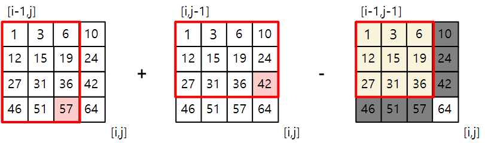
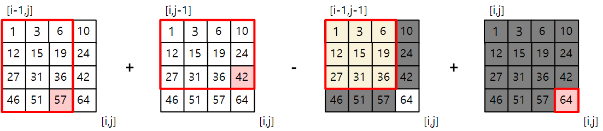
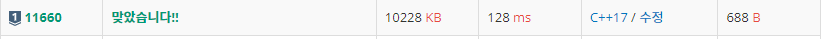

#INFO
난이도 : SILVER1
문제유형 : 다이나믹 프로그래밍(DP)
출처 : 11660번: 구간 합 구하기 5 (acmicpc.net)
 
#SOLVE
N * N 크기의 표를 저장할 2차원 배열과, 표를 저장한 2차원 배열의 [i][j] 번째 까지의 합을 저장할 dp 배열을 선언한다.
int arr[1025][1025] = {};
int dp[1025][1025] = {};다음으로 Arr 배열과 Dp 배열을 초기화한다.

Arr 배열은 그냥 입력받으면 되기에 설명은 생략하도록 하겠다.
Dp 배열의 점화식 원리는 다음과 같다.
(1,1) 부터 (4,4) 까지의 합을 구하는 상황을 예시로 생각해보자.
1. dp[i-1][j] 값과 dp[i][j-1] 값을 더한다.

2. 그러면 1 ~ 36 사이의 값은 중복이 발생하게 된다. 따라서 dp[i-1][j-1]값을 빼준다.

3. 마지막으로 arr[i][j] 값을 더해주면 (1,1) 부터 (4,4) 까지의 총 합이 구해진다.

위 과정을 종합해보면 다음과 같은 점화식이 구해진다.
dp[i][j] = dp[i-1][j] + dp[i][j-1] - dp[i-1][j-1] + arr[i][j];
출력하는 코드도 비슷한 논리로 작성하면 된다!
#include <iostream>
using namespace std;
int arr[1025][1025] = {};
int dp[1025][1025] = {};
int main() {
ios::sync_with_stdio(false);
cin.tie(0); cout.tie(0);
// Init Array
int N,M;
cin >> N >> M;
for (int i = 1 ; i <= N ; i++) {
for (int j = 1 ; j <= N ; j++) {
cin >> arr[i][j];
}
}
// Solve (Init DP)
for (int i = 1 ; i <= N ; i++) {
for (int j = 1 ; j <= N ; j++) {
dp[i][j] = dp[i-1][j] + dp[i][j-1] - dp[i-1][j-1] + arr[i][j];
}
}
// Output
for (int i = 0 ; i < M ; i++) {
int x1,y1,x2,y2;
cin >> x1 >> y1 >> x2 >> y2;
cout << dp[x2][y2] - dp[x1-1][y2] - dp[x2][y1-1] + dp[x1-1][y1-1]<< '\n';
}
return 0;
}